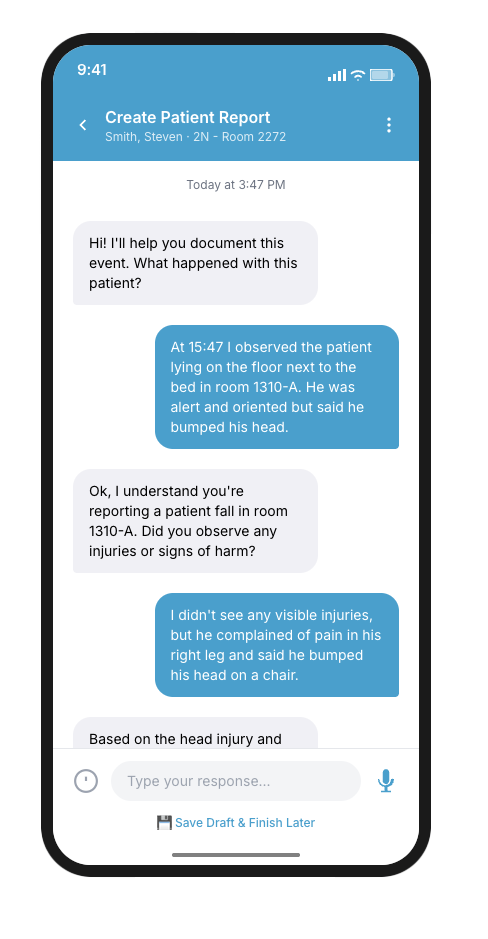
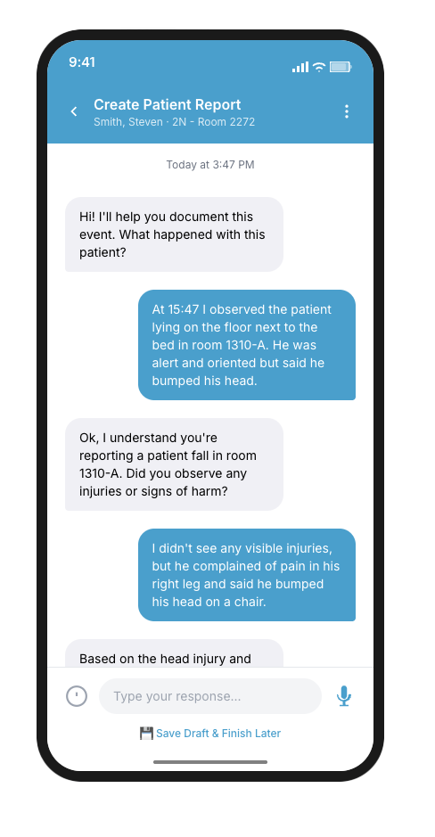

The Challenge
Legacy HarmReporting Is Broken
Most large hospitals and health care systems struggle with their voluntary safety event reporting systems. Front line clinicians face complex mobile-unfriendly web forms, with hundreds of categories and dozens of required fields, taking an average of more than 10 minutes to complete. In many cases, clinicians abandon the forms due to cognitive overload and frustration, so the data is often incomplete or delayed.
"I want to report it quickly without leaving the floor, so the right people know about it and the right people can do something about it or maybe prevent it from happening again." — Nurse, Medical-Surgical Unit
Research & Insights
- Shadowing Study: Observed 18 frontline staff filing legacy web forms to understand pain points and workflow interruptions. Average completion time: 10 minutes
- Journey Mapping: Identified emotional dip at category selection and cognitive overload leading to abandonment. 67% abandon at dropdown selection
- Analytics Review: Analyzed reporting patterns and identified delays in event submission timing. Only 18% submitted within 24h
Analysis of 2,800+ incident reports revealing dropdown complexity as primary abandonment point
Design Process
Design Challenge
How do we transform a 47-field web form that takes 10+ minutes into a mobile conversation that feels effortless? Our approach: Replace dropdown hunting with natural language—users just describe what happened, and the AI handles categorization, validation, and routing automatically.
Conversation Mapping
Collaborated with patient safety SMEs to identify NLP slots and create intent taxonomy for natural language processing.
- Conversation flowchart with branching logic
- Intent classification system
- Required data field mapping
Prototype Sprint
Built high-fidelity Figma prototype with Voiceflow integration to test voice vs text input preferences. Finding: 82% preferred text over voice due to privacy concerns on hospital floors ("Don't want coworkers hearing patient details").
- Interactive prototype with voice capabilities
- User testing with 15 frontline staff
- Input preference analysis → Text prioritized, voice optional
Was this an assisted or unassisted fall?
AI Training & Optimization
Trained the AI on 8,000 synthetic incident reports and 2,000 de-identified real reports to understand healthcare language patterns. Optimized for brevity and completion—ensuring the AI asks only essential follow-up questions without overwhelming users.
- Training dataset: 10K reports across all event types
- Response quality metrics: brevity, clarity, medical accuracy
- Completion rate optimization → 94% users finish reports
Validation Testing
Conducted Wizard-of-Oz bedside pilots on 2 medical-surgical units with 42 real reports.
- Pilot performance dashboard
- User feedback analysis
- System improvement recommendations
Solution
Conversational, Context-Aware Reporting
FLAER transforms event reporting from a tedious chore into a fast, intuitive conversation. Clinicians simply speak or type what happened—no more hunting through endless dropdowns. The AI listens, asks only the most relevant follow-ups, and auto-fills known details like unit or shift. Every report is validated in real time, ensuring data quality and routing urgent events to the right team in minutes, not hours.
- Natural Language First: Large text box and mic button for instant voice or text capture—even at the bedside.
- Smart, Adaptive Prompts: The AI asks only what's missing, never repeating what it already knows.
- Privacy by Design: On-device encryption and a "Hide screen" panic tap for sensitive moments.
- Seamless Routing: Each report is auto-tagged and sent to the right team—no manual triage required.
The result? Clinicians can file a complete, high-quality report in under two minutes and get back to patient care—knowing nothing will fall through the cracks.
 

Impact
70%
Faster Reporting
10 min 12s → 2 min 41s
157%
More Reports
880 → 2,260 monthly
94%
Data Completeness
↑26pp improvement
86
SUS Score
+28 points
"That is sooo much easier. It's really amazing. I'd absolutely use this. Everyone will. Are the nurse managers gonna be able to handle all the reports they're gonna get? There's a lot of stuff that should be reported that isnt." — RN, Pilot User